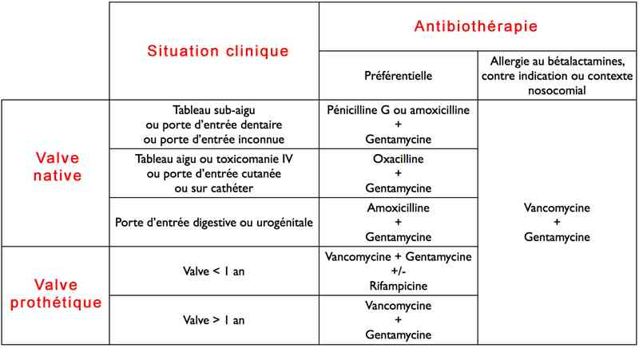

Bienvenue Sur Medical Education
Endocardites infectieuses
Spécialité : cardiologie / infectieux /
Points importants
-
Pathologie infectieuse de l'endothélium cardiaque
-
Pathologie systémique à la présentation polymorphe
-
Tout syndrome fébrile avec souffle cardiaque et/ou facteur de risque d'endocardite est une endocardite jusqu'à preuve du contraire
-
Lésion caractéristique : végétation, amas fibrino-plaquettaire où prolifèrent les micro-organismes
-
On distingue l'endocardite aiguë (évolution rapide, mutilante pouvant survenir sur endocarde sain) de l'endocardite subaiguë ou lente, dite d'Osler (évolution lente survenant sur une cardiopathie préexistante)
-
Le diagnostic repose sur les hémocultures et l'échocardiographie
-
Le pronostic repose sur la précocité du diagnostic et du traitement
-
Environ 1500 cas/an en France
-
Mortalité globale élevée (environ 20%)
Présentation clinique / CIMU
SIGNES FONCTIONNELS
Présentation clinique / CIMU
SIGNES FONCTIONNELS
Généraux
- Altération de l'état général : asthénie, amaigrissement, anorexie, pâleur
- Endocardite aiguë : syndrome infectieux septicémique brutal avec fièvre marquée (40°C) et frissons
- Endocardite subaiguë : fièvre d'intensité variable, prolongée, pouvant disparaître transitoirement
Spécifiques
- Diminution des capacités d'effort
- Douleurs lombaires
- Arthralgies, myalgies
- Sueurs nocturnes
CONTEXTE
Terrain
- Toute chirurgie ou effraction cutanéo-muqueuse réalisée dans un contexte septique pouvant conduire à une bactériémie (soins dentaire, sondage urinaire, toxicomanie IV, intubation nasotrachéale, coloscopie, accouchement...)
- La porte d'entrée peut aider à déterminer le germe en cause
Facteurs de risque
- Valvulopathie, de plus en plus fréquemment d'origine dégénérative
- Chirurgie cardiaque et valvulaire
- ATCD d'endocardite
- Cardiopathies congénitales ou cyanogènes (CIV, persistance du canal artériel, tétralogie de Fallot, coarctation de l'aorte)
- Cardiomyopathie obstructive et hypertrophique
EXAMEN CLINIQUE
- Tableau clinique variable et polymorphe
Fièvre
Signes cardio-vasculaires
- Apparition ou modification d'un souffle cardiaque (peut être inconstant au stade initial d'une endocardite aiguë)
- Le retentissement hémodynamique peut-être précoce (endocardite aiguë++)
- Tachycardie
- Insuffisance cardiaque par atteinte valvulaire
Splénomégalie présente dans 50% des cas d'endocardite subaiguë
Signes cutanéo-muqueux
- Purpura pétéchial cutané ou muqueux (conjonctival, buccal)
- Faux panaris d'Osler : fugaces (interrogatoire++) nodules douloureux rougeâtres, bleuâtres, au niveau de la pulpe des doigts et des orteils
- Placards érythémateux palmo-plantaires de Janeway
- Hippocratisme digital tardif
Embolies septiques et phénomène vasculaire
- AVC
- Embolie pulmonaire septique
- Abolition d'un pouls périphérique (répéter examen clinique)
- Anévrisme mycotique
- Infarctus rénal ou splénique
- Gangrène périphérique
- Anomalies du fond d'oeil : nodules de Roth, purpura, hémorragie rétinienne
- Articulaire : arthrite, spondylodiscite, épidurite
EXAMENS PARACLINIQUES SIMPLES
- ECG : trouble de la conduction (abcès septal), trouble du rythme
- BU : protéinurie et hématurie (atteinte du glomérule rénal)
CIMU
-
Tri 1 à 3
Signes paracliniques
BIOLOGIQUE
NFS
- Hyperleucocytose
- Anémie inflammatoire
Hémocultures
- Examen clé qui objective la septicémie et identification du germe
- Répétées avant toute antibiothérapie aéro-anaérobies et parfois sur milieux spéciaux enrichis (Sabouraud, cystéine, pyridoxine)
- Positives dans 90% des cas
IMAGERIE
Echocardiographie transthoracique (sensibilité 60%) et transoesophagienne (sensibilité 90%)
- Intérêt diagnostique et pronostique
- Objective une végétation (échos denses, irréguliers, mobiles), un abcès, une désinsertion de prothèse
- Evalue le retentissement hémodynamique, la fonction du VG
- Recherche des complications (rupture de cordage, péricardite)
- Les valves mitrale et surtout aortique sont les plus souvent atteintes
- La valve tricuspide peut-être atteinte en cas de forte contamination par voie veineuse (VVC, toxicomanie IV, sonde cardiaque)
Radiographie du thorax
- Signes d'insuffisance cardiaque
Recherche d'une porte d'entrée
- Panoramique dentaire
-
Radiographie des sinus
Diagnostic étiologique
Porte d'entrée
- Soins dentaires et ORL : streptocoque
- Colique : Streptococcus bovis, entérocoque
- Urinaire et génitale : staphylocoque, entérocoque
- Cutanée : staphylocoque
- Toxicomanie intraveineuse : staphylocoque, champignons
Micro-organismes responsables sur valves natives
- Streptocoques et entérocoques : 60%
- Staphylocoques : 25 %
- Autres bactéries et levures : 10%
Micro-organismes responsables sur prothèse valvulaire
- Streptocoques et entérocoques : 30 %
- Staphylocoques : 45 %
- Autres bactéries et levures : 20%
Autres
- Entérobactéries
- Pseudomonas
- Pneumocoques
- Brucella
- Coxiella burnetii
- Groupe HACEK à la croissance très lente nécessitant un milieu enrichi (Haemophilus, Actinobacillus actinomycetemcomitans, Cardiobacterium hominis, Eikenella corrodens, Kingella kingae)
-
Dans 5 à 10% des cas, aucun agent pathogène n'est retrouvé
Diagnostic différentiel
-
Maladie thrombo-embolique
-
Myxome auriculaire
-
Péricardite
-
Pathologies induisant une fièvre d'origine inconnue non infectieuse :
-
néoplasies, collagénoses, vascularites
Traitement
TRAITEMENT PREHOSPITALIER / INTRAHOSPITALIER
-
néoplasies, collagénoses, vascularites
Traitement
TRAITEMENT PREHOSPITALIER / INTRAHOSPITALIER
Stabilisation initiale
- Deux voies d'abords veineuses périphériques
- Antibiothérapie avant résultats microbiologiques et après prélèvements (cf. paragraphe "Médicaments")
- L'attente de l'identification bactériologique peut se discuter en l'absence de tout signe de gravité
- Si indication : intubation orotrachéale et ventilation mécanique
- NaCl 0,9%: 40 mL/kg/j si absence de sepsis sévère et/ou d'insuffisance cardiaque
- Appel du cardiologue et/ou du chirurgien cardiaque
- Appel du réanimateur si signes de gravités (sepsis sévère, insuffisance cardiaque, choc)
Suivi du traitement
- Eviction ou traitement du foyer septique (abcès, infection sur matériel, etc.)
-
Si sepsis sévère ou choc :
- profil septique => expansion vasculaire rapide (NaCl 0,9%) 30mL/kg, et/ou HEA jusqu'à 30 mL/kg maximum ; si HoTA persistante, noradrénaline IVSE au débit adapté à la PAM (= 65 mmHg) en débutant à 0,4 gamma/kg/min
- profil cardiogénique : dobutamine (dose initiale : 5 µg/kg/min)
-
Avis chirurgical en urgence si :
- tableau aigu
- toxicomanie IV
- porte d'entrée cutanée sur cathéter
- infection précoce sur prothèse valvulaire
- BAV
- embolie
-
Indication d'isolement si :
- toxicomanie IV
- porte d'entrée cutanée, sur cathéter
- infection tardive sur prothèse valvulaire (> 1 an)
-
Poursuite anticoagulation efficace si prothèse valvulaire mécanique :
- relais du traitement AVK par HNF IVSE sauf si AVC hémorragique
MEDICAMENTS
Antibiothérapie précoce bactéricide
- Antibiothérapie probabiliste avant identification microbiologique
 _53 Tableau Antibiothérapie probabiliste avant identification microbiologique
- Posologie et mode d'administration de l'antibiothérapie
_54
Tableau
Posologie et mode d'administration de l'antibiothérapie
Surveillance
CLINIQUE
-
Conscience, T°, FC, PA, SpO2/h si choc, sepsis sévère ou insuffisance cardiaque sévère
-
Cardioscope
-
ECG répété
-
Diurèse
-
Examen clinique répété : neurologique et cardio-vasculaire (pouls++)
PARACLINIQUE
-
Echographique
Devenir / orientation
CRITERES D'ADMISSION
Devenir / orientation
CRITERES D'ADMISSION
Hospitalisation nécessaire
-
Admission en réanimation si :
- choc
- sepsis sévère
- insuffisance cardiaque sévèr
- Admission en soins intensifs de cardiologie : préférable à la phase initiale en l'absence de choc, sepsis sévère ou insuffisance cardiaque sévère
Bibliographie
-
Urgences médico-chirurgicales de l'adulte - P. Carli, B. Riou, C. Télion - Edition Arnette
-
Urgences médicales - A. Ellrodt - Edition Estem
-
Checklists de médecine interne - J.M. Hahn - Edition Thieme Maloine
-
E. Pilly - 2ème édition - Collège des universitaires de maladies infectieuses et tropicales - Edition Vivactis Plus
Auteur(s) : Xavier BOBBIA, Pierre-Géraud CLARET